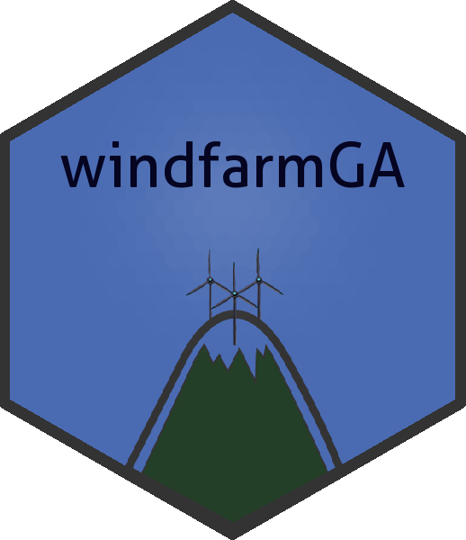

windfarmGA: Genetic Algorithm for Wind Farm Layout Optimization
Source:R/windfarmGA_package.R
windfarmGA-package.RdThe genetic algorithm is designed to optimize wind farms of any shape. It requires a predefined amount of turbines, a unified rotor radius and an average wind speed value for each incoming wind direction. A terrain effect model can be included that downloads an 'SRTM' elevation model and loads a Corine Land Cover raster to approximate surface roughness.
Details
![[Stable]](figures/lifecycle-stable.svg)

A package to optimize small wind farms with irregular shapes
using a genetic algorithm. It requires a fixed amount of turbines, a fixed
rotor radius and an average wind speed value for each incoming wind
direction. A terrain effect model can be included which downloads a digital
elevation model and a Corine Land Cover raster to approximate surface
roughness. Further information can be found at the description of the
function genetic_algorithm.
Author
Maintainer: Sebastian Gatscha sebastian_gatscha@gmx.at